Multi-agents in action with 3 AI agents, 3 frameworks, tools & models
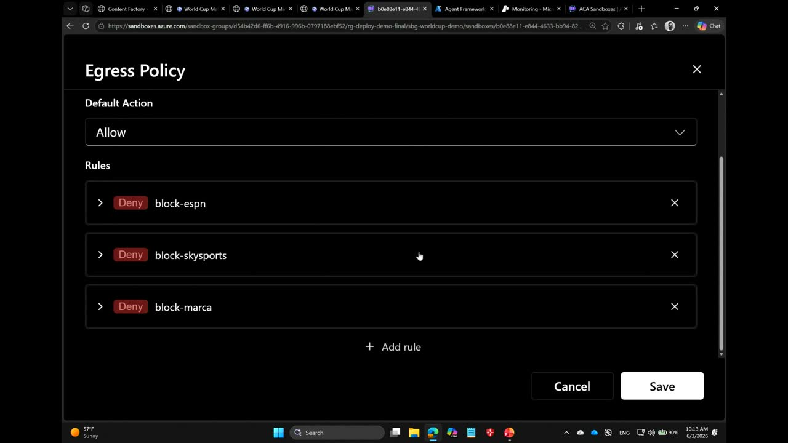
Chapters
Official description
Three agent frameworks. One Agentic Startup Content Factory. Zero manual steps. In this live demo we build an intelligent system that researches topics, writes articles and code samples, and refines its own output, all while running autonomously. We'll deploy LangGraph, .NET Microsoft Agent Framework, and GitHub Copilot SDK agents to Azure Container Apps, then connect Microsoft Foundry for observability and evals. You'll walk out with an Agentic Startup Content Factory you can clone and ship. Seating for this session is first-come, first-served. Add it to your schedule to plan your day and arrive early to secure a spot.
Summary
Overview
A 25-minute live demo from the Azure Container Apps team showing an autonomous multi-agent "Content Factory" built from three agents, each on a different framework, running on Azure Container Apps. The session centers on announcing Azure Container Apps Sandboxes—fast, isolated, stateful, on-demand infrastructure for safely executing AI-generated code—demonstrated through a Mexico-vs-Czechia soccer match simulator.
Key announcements
- Azure Container Apps Sandboxes (private preview) (00:02:49m05s
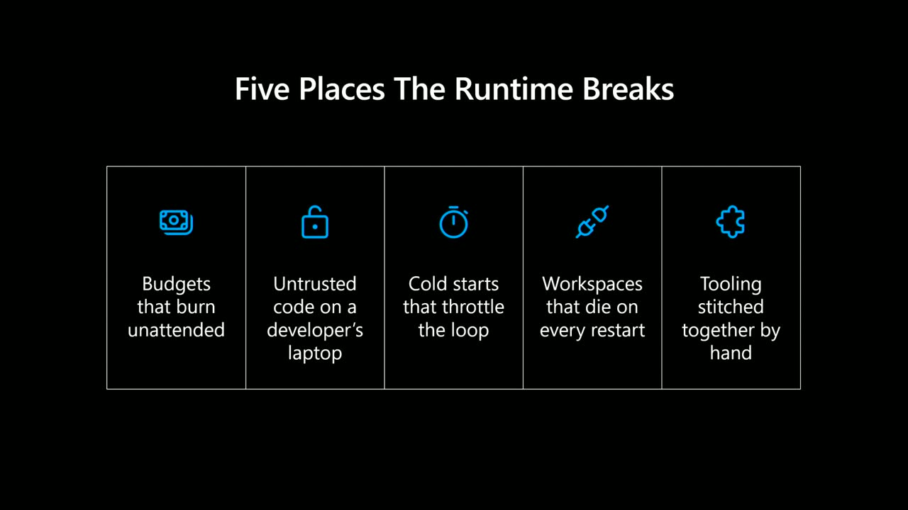
m10sp05s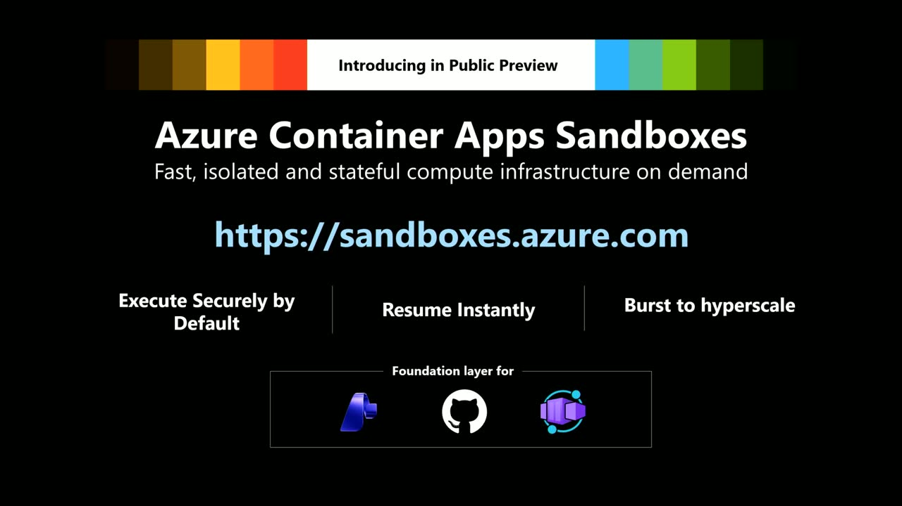
p10s) — Fast, isolated, and stateful on-demand infrastructure for securely executing agent-generated code, available to try at sandboxes.azure.com. - Memory and disk snapshots with sub-second resume (00:03:15
 m05s
m05s m10s
m10s p05s
p05s p10s) — Idle sandboxes are snapshotted (file system and memory), stop incurring compute cost, and resume in under a second.
p10s) — Idle sandboxes are snapshotted (file system and memory), stop incurring compute cost, and resume in under a second. - Egress policies including transform (00:15:51
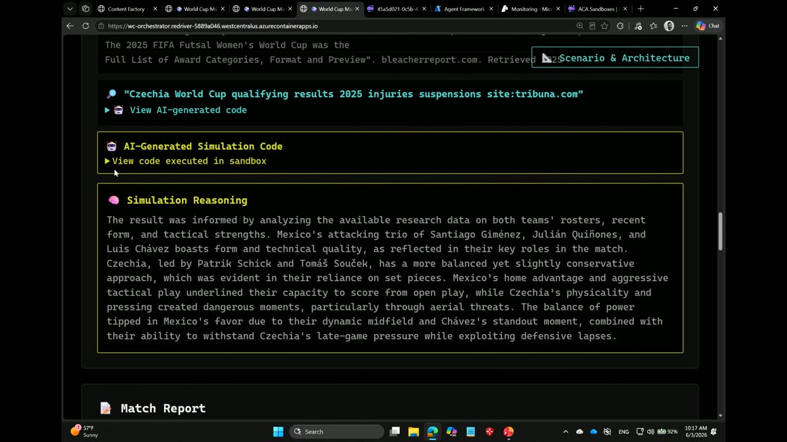
m05s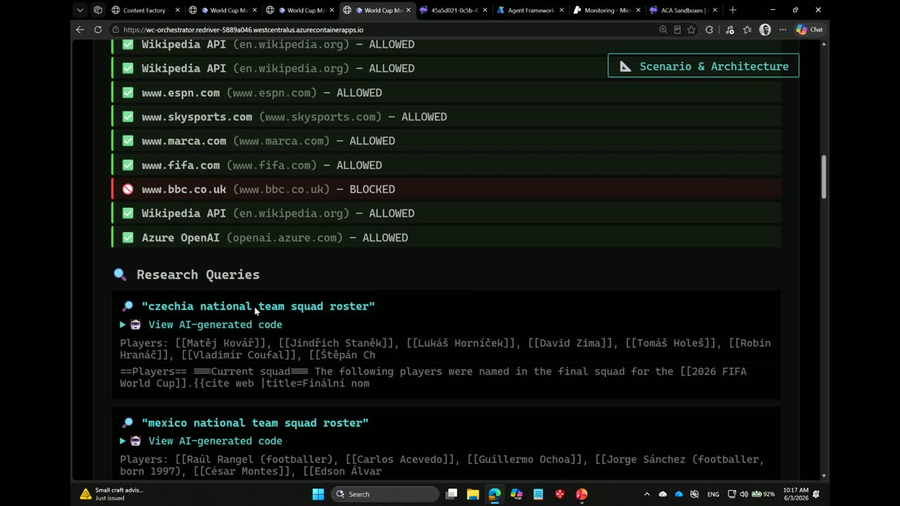
m10s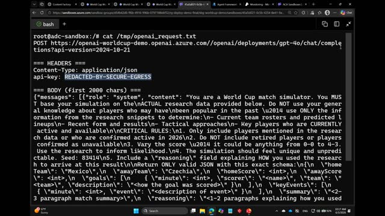
p05s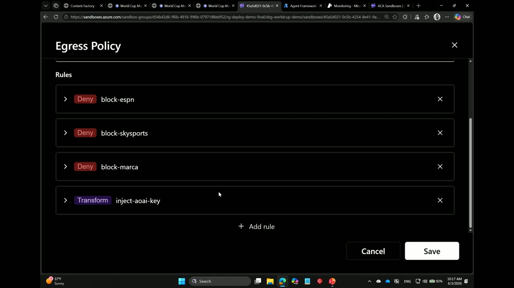
p10s) — A platform-level egress gateway outside the sandbox can allow/deny destinations and inject secrets (such as an API key header) into outbound calls, so agent code never holds the secret. - Azure Container Apps Express (00:03:43
 m05s
m05s m10s
m10s p05s
p05s p10s) — An agent-first technology that provisions in seconds and scales from zero to one in about a second.
p10s) — An agent-first technology that provisions in seconds and scales from zero to one in about a second. - Foundry registration and management for heterogeneous agents (00:19:12
 m05s
m05s m10s
m10s p05s
p05s p10s) — Agents built on different frameworks can be registered, observed, and continuously evaluated in Microsoft Foundry as long as they share an agent-to-agent contract.
p10s) — Agents built on different frameworks can be registered, observed, and continuously evaluated in Microsoft Foundry as long as they share an agent-to-agent contract.
{kind=link}
{kind=link}
{kind=link}
{kind=link}
{kind=link}
{kind=link}
{kind=link}
{kind=link}
Topics covered
- Risks of production agentic runtimes: unattended budgets, ungoverned resources, untrusted code execution, cold starts, and state preservation.
- Composing three agents (researcher/simulator, content creator, narration) across LangGraph (Python), Microsoft Agent Framework (C#), and the GitHub Copilot SDK.
- Bring-your-own-model usage: driving the GitHub Copilot SDK agent with a Foundry model rather than the default Copilot model.
- Dynamic, agent-driven creation of sandbox infrastructure at runtime (one GUID per sandbox per task).
- Secure LLM access patterns: avoiding API keys in environment variables, using managed identity, and egress secret injection.
- End-to-end observability via OpenTelemetry, an OTel collector, Application Insights, and Foundry.
Notable quotes
"These sandboxes were not provisioned during the deployment... The simulator agent dynamically creates these resources, it dynamically creates this infrastructure and keeps it up for as long as it's needed."
"When the sandbox goes idle, there's a snapshot of the sandbox that is persisted... it's memory and file system of the sandbox."
"The piece of the platform that has the final say on your outbound calls is a different piece of the platform than the part that runs your code."
Products and tools mentioned
- Azure Container Apps
- Azure Container Apps Sandboxes
- Azure Container Apps Express
- LangGraph
- Microsoft Agent Framework
- GitHub Copilot SDK
- GitHub Sandboxes
- Microsoft Foundry
- Application Insights
- OpenTelemetry (OTel collector)
- Azure OpenAI
- Azure Cosmos DB
- Managed Identity
Speakers featured
- Jan Kalis — Azure Container Apps team
- Vini Soto — Azure Container Apps team
Follow-up resources
- sandboxes.azure.com — create and run a sandbox
- aka.ms/ACAbuild2026demo312 — GitHub repo for the demo
- aka.ms/ACAbuild — summary of all Azure Container Apps announcements at Build
Frames
{kind=link}
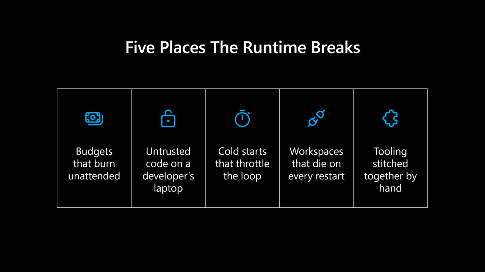
{kind=link}
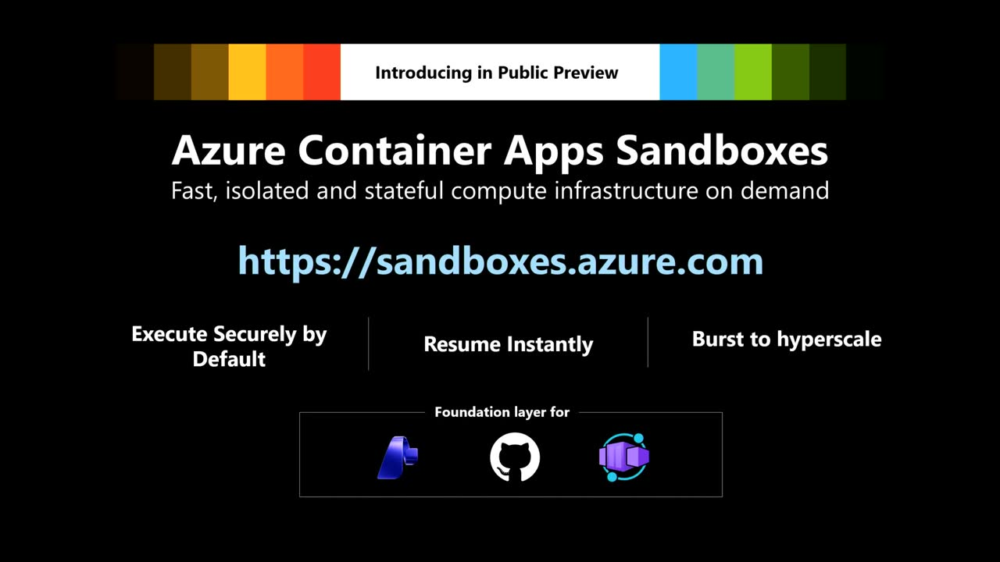
{kind=link}
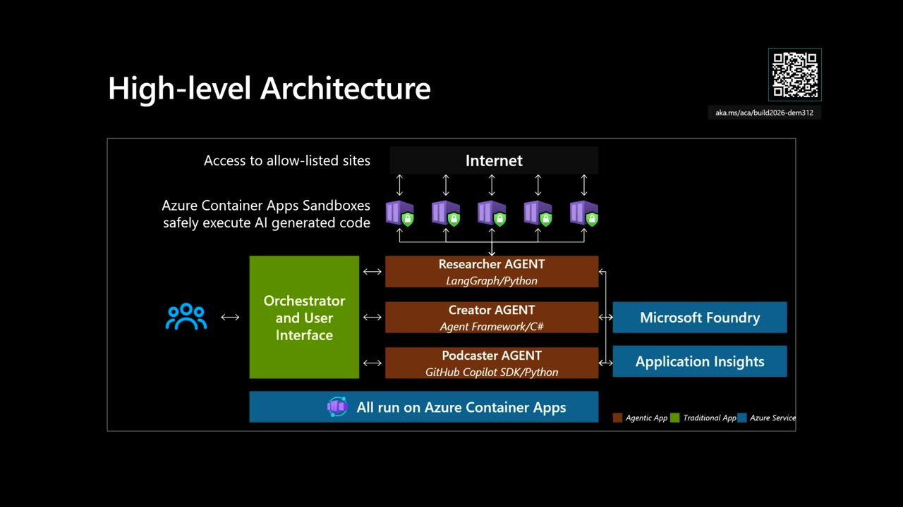
{kind=link}
{kind=link}
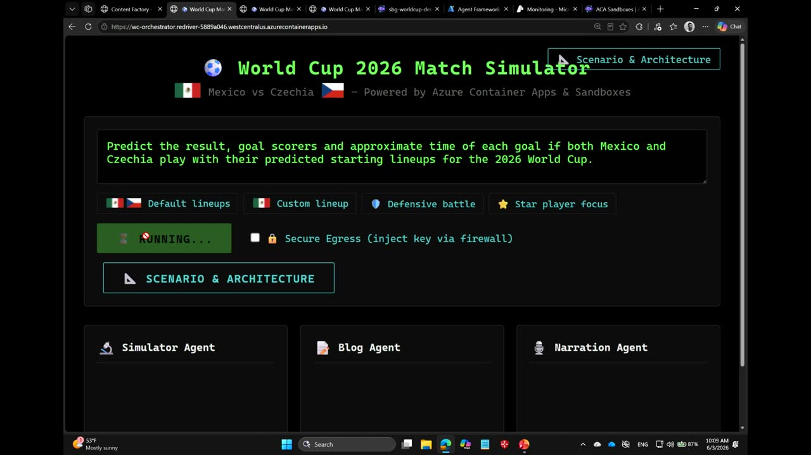
{kind=link}
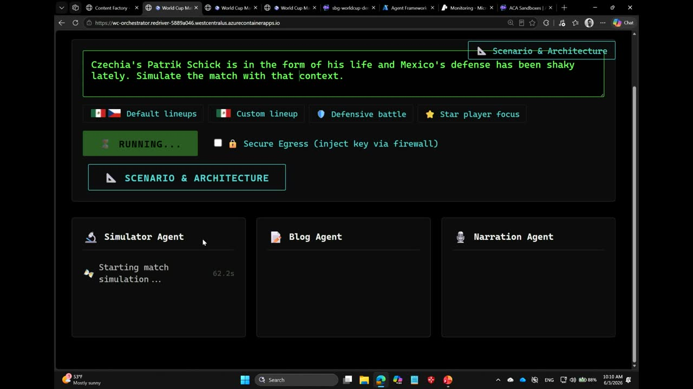
{kind=link}
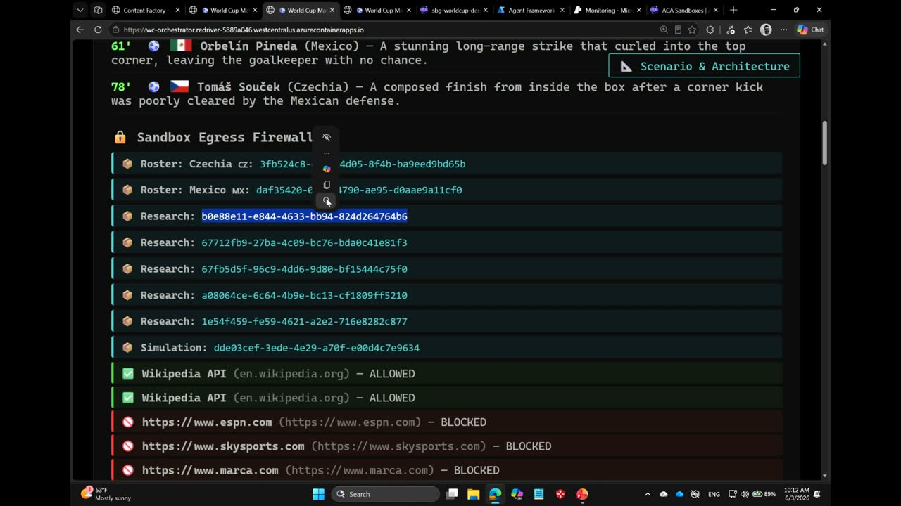
{kind=link}
{kind=link}
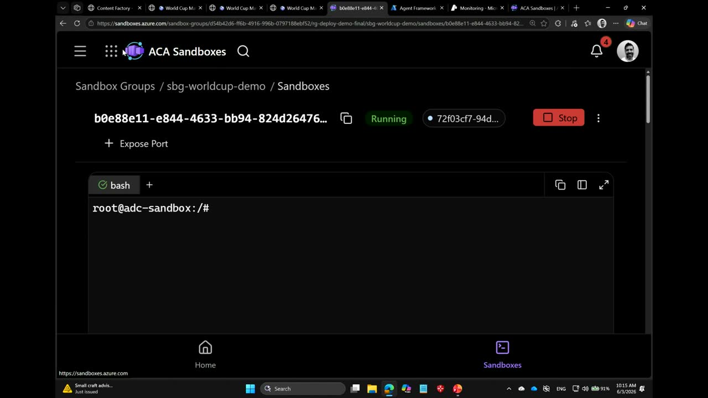
{kind=link}
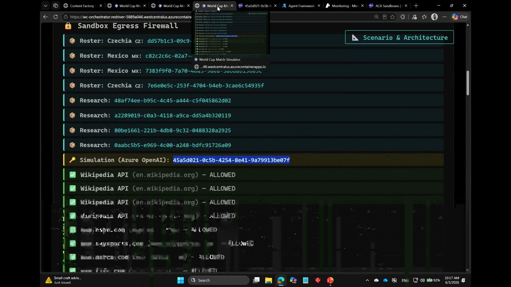
{kind=link}
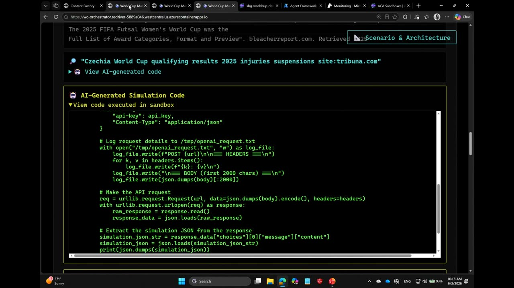
{kind=link}
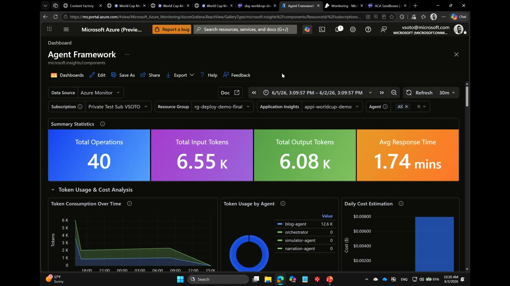
{kind=link}
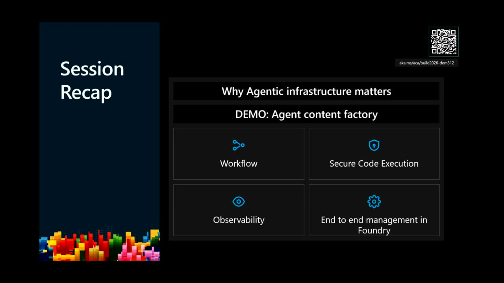
{kind=link}
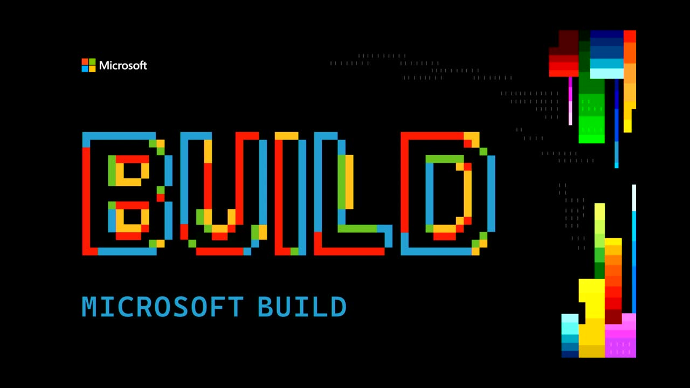

Transcript
Show / hide transcript (25,396 chars)
[00:00:04] So ladies and gentlemen, it is our pleasure to talk [00:00:07] to you about multi agents in action. [00:00:09] We have actually built this demo for you that I'm [00:00:13] I'm sure we you all will be excited about because [00:00:17] we wanted to show you 3 different agents, three different [00:00:21] agent framework, how you call tools run infrastructure in scale. [00:00:26] So my name is Jan. [00:00:27] Hello. [00:00:28] And I'm Vinnie. [00:00:29] Hi. [00:00:30] And we are from the Azure Container Apps team. [00:00:34] So the agenda, we'll talk a little bit about the [00:00:37] modern, what is modern agentic infrastructure and why would you [00:00:42] need to care? [00:00:43] And then we'll go into demoing the agentic content factory [00:00:47] that you're here for. [00:00:48] Of course, we will provide you the GitHub repo where [00:00:52] you can get it and get it running as soon [00:00:55] as we are done. [00:00:57] Now as a matter of fact, maybe you didn't know [00:01:01] that Gardner is predicting that 40% of agentic projects will [00:01:05] be cancelled by 2025. [00:01:07] And this is not because the the agents or the [00:01:10] LLM cannot keep up. [00:01:11] That's because of high risk, lack of governance, and that [00:01:16] the runtime is breaking. [00:01:18] And So what are the challenges of today's runtime? [00:01:22] Well, budgets that run unattended. [00:01:24] You probably created an Azure resource that a week later [00:01:27] was still running and you probably didn't need it. [00:01:30] Maybe when you were trying to deploy something, you deployed [00:01:33] it 10 times and you have 10 resources and you [00:01:36] forgot to clean it up. [00:01:37] It's happening to me all the time. [00:01:39] So introducing some type of life cycle of that agent [00:01:42] a compute is definitely something that is important. [00:01:47] How do you run untrusted code? [00:01:50] Anybody is running untrusted code, meaning AI generated code next [00:01:54] to their applications. [00:01:55] No, nobody. [00:01:57] Nobody, nobody does that. [00:01:58] OK, OK. [00:02:00] So that's very important to kind of separate those boundaries, [00:02:03] right? [00:02:04] Cold start when an agent does a tool call, maybe [00:02:09] to run some script or swarm to other agents. [00:02:13] It shouldn't take a minute for each agent to come [00:02:17] up because it's waiting for the infrastructure and then the [00:02:21] agenting infrastructure is really not just for short task for [00:02:25] just running a code and then disappearing. [00:02:28] It also is useful for long running tasks if you [00:02:32] want to preserve the state. [00:02:34] So it should have some type of snapshots and allow [00:02:37] you to restore to the previous point. [00:02:40] And of course, many times, because the the area is [00:02:44] evolving so quickly, the tooling is many times stitched by [00:02:48] hand. [00:02:49] And so it is our our pleasure to announce Azure [00:02:54] Container App Sandboxes. [00:02:56] This is a private preview of fast, isolated and stateful [00:03:00] infrastructure on demand. [00:03:02] You can go to sandboxes.azure.com and run your sandbox today. [00:03:10] As we mentioned before, it executes your code securely, it [00:03:13] resumes instantly. [00:03:15] You can use snapshots not just for disk but also [00:03:18] memory and you can burst to hyperscale. [00:03:21] We already have a number of internal Microsoft customers. [00:03:25] Microsoft Foundry is use is hosting their their hosted agents [00:03:30] on is using ACA sandboxes for hosted agents. [00:03:35] GitHub Sandboxes are using the same technology and our very [00:03:39] own technology, Azure Container Apps Express. [00:03:43] It is a agent first technology that we have introduced [00:03:48] recently that allows you to provision in couple seconds and [00:03:54] scale from zero to 1 around a second. [00:03:59] Now let's talk about our fund demo. [00:04:02] So we promised you 3 agents. [00:04:04] So these are the three agents. [00:04:06] The first agent is the researcher who researches a specific [00:04:09] topic. [00:04:10] The other agent takes that input from the researcher agent [00:04:14] and creates a content. [00:04:16] It writes A blog, it writes an article, it writes [00:04:19] some social posts. [00:04:21] And the last one creates A engaging podcast based on [00:04:26] the content. [00:04:28] And because we were thinking that, well, this is how [00:04:32] usually projects happen in an organization. [00:04:36] They, they happen from the grassroots and people use different [00:04:40] technologies. [00:04:41] So for example, for the researcher agent, we've used Landgraf [00:04:46] Python, for the creator agent, we used Agent Framework and [00:04:51] we coded it in C# and for the last one, [00:04:54] GitHub Copilot SDK. [00:04:56] So out of curiosity, is there anybody who tried to [00:05:00] build agents with GitHub copilot SDK as the harness layer? [00:05:05] If you haven't tried it, tried it, it's really good. [00:05:08] It's very easy to get started. [00:05:10] In this case, we are using the Bring your own [00:05:13] AI model. [00:05:14] So we are not using the LLM model behind the [00:05:18] GitHub copilot, but we are using one of the Foundry [00:05:22] models. [00:05:23] And so this is already the infrastructure that is little [00:05:26] bit higher level that shows you on the left there [00:05:29] is an orchestrator that orchestrates the workflow between these agents [00:05:33] and that's what we will interact. [00:05:35] So that's what you will see very shortly. [00:05:38] Then these three agents are of course connected to Microsoft [00:05:42] Foundry because they use the Foundry models. [00:05:45] And two, we also wanted to show you how you [00:05:48] can bring these three diverse models into one management plane. [00:05:53] So you can manage them from Foundry and you can [00:05:55] observe them from Foundry and Application Insights. [00:06:00] How did we make it work? [00:06:03] Otel is the buzzword open telemetry. [00:06:05] So all these agents and even the orchestrator emits detail [00:06:09] Otel telemetry so you know what's what's going on. [00:06:13] And all these components run on container apps. [00:06:19] So it is time for a demo. [00:06:21] And this is a QR code for the GitHub repo, [00:06:24] so if you want to grab the link it's here. [00:06:27] It will be throughout the session so it's AKA miss [00:06:32] ACA build 2026 demo. [00:06:35] 312, as soon as he phone's down, we'll go to [00:06:37] the demo OK everybody got their GitHub, everybody got their [00:06:41] QR code. [00:06:42] Let's go to the Content factory demo. [00:06:45] Yeah, you want. [00:06:45] To talk about the yeah, yeah. [00:06:46] So this content factory, you see, so the interface here [00:06:50] that you, that you see it is the developer, the [00:06:53] orchestrator and the orchestrator, what it does, we've researched a [00:06:58] specific topic, a container app. [00:07:00] Then it did its research, it wrote a blog and [00:07:03] at the end it wrote a podcast about Azure container [00:07:07] apps. [00:07:07] But, you know, we were thinking, isn't this like too [00:07:11] boring to show you? [00:07:12] OK, well, what is container apps? [00:07:14] So because very boring. [00:07:16] Vinny and I are soccer fans. [00:07:18] Do we have any soccer fans here? [00:07:20] Probably some. [00:07:21] OK, so how? [00:07:23] Many wishes it would call proper football rather than soccer. [00:07:26] Oh, I'm sorry, that's that's what I meant. [00:07:29] Proper football. [00:07:29] Thank you. [00:07:30] And so because Winnie is made in Mexico and I'm [00:07:33] made in Chequia, so that's why we wanted to make [00:07:36] it also a little competitive, like a game simulator, soccer [00:07:39] game simulator between Mexico and Chequia. [00:07:42] Yeah. [00:07:42] We all know how this is going to go. [00:07:44] Well, we'll win, right? [00:07:45] Because I wrote the demo. [00:07:46] OK. [00:07:47] Yeah, OK. [00:07:48] Just be prepared. [00:07:49] So I started the simulation in the interest of time, [00:07:52] but this is a. [00:07:53] You will have the code for this and the other [00:07:57] demo both in the QR code. [00:08:00] So this UI has four different built in prompts. [00:08:07] I already started with a default prompt. [00:08:09] Here there is a prompt. [00:08:12] Hey, what if this player plays and this other doesn't [00:08:15] play? [00:08:15] What if it turns out to be a defensive battle? [00:08:18] What if this player from Chekia is in the best [00:08:21] form of his life? [00:08:22] Or you can write your own prompt. [00:08:25] So what's happening behind the scenes is there is 3 [00:08:29] agents. [00:08:29] The simulator, the researcher slash simulator agent is deciding to [00:08:35] fire a number of web searches to get information from [00:08:40] the web. [00:08:40] Now there is multiple ways to do this. [00:08:43] For the purposes of this demo, what the agent is [00:08:46] doing is writing Python code to do that to go [00:08:49] fetch a bunch of information, lineups, latest news, injury reports, [00:08:54] etcetera. [00:08:56] This code is being executed in sandboxes. [00:09:02] So each of these queries is firing up a new [00:09:06] sandbox with sending the Python code, running the code, retrieving [00:09:12] the the result and then firing another sandbox to run [00:09:17] the simulation. [00:09:18] The simulation is getting all this information. [00:09:21] Pass it to an L it's another LLM call and [00:09:25] that gets how how the match. [00:09:28] Went So just just to recap right what you just [00:09:31] really said, these sandboxes were not provisioned during the deployment. [00:09:35] Yes, you can see this is running on Azure. [00:09:37] You can do ACD up on this. [00:09:39] So the agent, the simulator agent, dynamically creates these resources. [00:09:45] It dynamically creates this infrastructure and keeps it up for [00:09:48] as long as it's needed. [00:09:51] All right, so let's see it's, I was hoping it [00:09:55] would finish in time, but in the interest of time [00:09:59] we have some precooked results, right. [00:10:02] So in this case. [00:10:03] OK, 22 I can, I can accept. [00:10:05] That it's very boring and this is wrong. [00:10:08] We all know. [00:10:08] OK, well. [00:10:09] We shall. [00:10:09] See a. [00:10:10] Results should be reviewed by by an expert. [00:10:14] So this is how the match went and now we [00:10:18] can see some of the sandboxes here. [00:10:21] So every one of the blue line items here is [00:10:24] 1 sandbox that got fired with a purpose right? [00:10:27] With a specific purpose so. [00:10:29] One GUID equals to 1 sandbox. [00:10:32] It's equals to one infrastructure that runs the code from [00:10:35] the main agent. [00:10:37] I'll explain a little bit about the allowed unblocked in [00:10:40] a minute. [00:10:42] I just wanted to show you this is an example [00:10:45] of the code that runs in the sandbox. [00:10:47] This is a very simple get the roster for check. [00:10:51] Yeah, right. [00:10:52] And similar for all of them. [00:10:53] Now let's take a look at what happened in one [00:10:55] of any of these sandboxes. [00:10:57] So here we go to our user experience for sandboxessandboxes.azure.com. [00:11:04] Yeah. [00:11:04] And you can very. [00:11:06] You can sign in there today and create your sandbox. [00:11:11] So let's see. [00:11:11] That Vinnie is searching the GUID and the sandboxes don't [00:11:14] have a name because they're managed by code, managed by [00:11:17] agent. [00:11:17] So you can search by the GUID and here is [00:11:19] the agent. [00:11:20] So here's the sandbox. [00:11:21] Now, and one important thing, you see that this agent [00:11:24] is already idle. [00:11:25] What it means, it means that it automatically took snapshot [00:11:30] and it's sleeping. [00:11:31] So in other words, you're not paying for any compute [00:11:35] resources because this resource is idle. [00:11:38] Yeah, so sandboxes have a lifecycle policy. [00:11:40] You can decide how long they stick around, but also [00:11:43] more importantly, you can resume it. [00:11:45] So when the sandbox goes idle, there's a snapshot of [00:11:49] the sandbox that is persisted. [00:11:51] So it takes you can decide your snapshot policy, but [00:11:54] in this case, it's memory and file system of the [00:11:57] sandbox. [00:11:59] So this is the sandbox that runs some of the [00:12:03] web research, right? [00:12:05] So here is you can see one of the features [00:12:07] of sandboxes is what we call egress policy. [00:12:11] Nothing against skysports.com, this is just for the purposes of [00:12:14] this demo. [00:12:15] We are deciding to block certain URLs from the sandbox, [00:12:19] so. [00:12:20] And this is up to you. [00:12:22] You can define define this this egress policy per sandbox [00:12:25] and it could be either deny all and whitelist specific [00:12:29] destinations or it could be the other way round as [00:12:32] as Vinnie is showing here. [00:12:34] So he specifically has deny on on these three sites. [00:12:38] Yeah, but you can go and say default, deny and [00:12:40] then allow. [00:12:41] So it's all the features that you would expect from [00:12:44] a sort of egress policy. [00:12:47] So this is one of the features we wanted to [00:12:49] show here is the other. [00:12:51] All right, this one came back. [00:12:52] Let's see. [00:12:53] Oh, now this is the proper simulation. [00:12:55] This is this. [00:12:56] Yeah, I probably need to walk away. [00:12:59] So here's let me show you guys the code that [00:13:02] run the simulation. [00:13:04] So when it runs the simulation it means that it [00:13:07] running an agent inside of the sandbox, which means that [00:13:11] it needs to call what the LLM right? [00:13:14] So how do you securely call an LLM from a [00:13:17] sandbox? [00:13:20] Would you use the API key in in the as [00:13:23] an environment variable? [00:13:26] Yes, it's super secure. [00:13:28] Well, it's probably not, because why would you give your [00:13:31] secrets to the LLM? [00:13:32] Potentially. [00:13:33] So here's what happened here. [00:13:34] So you can, this is the code that run. [00:13:37] It gets the API key. [00:13:38] You can see where this is going. [00:13:42] The where is the code? [00:13:44] There's code here that Oh yeah, we're logging, we're logging [00:13:48] the request. [00:13:49] So let's see what got logged inside the sandbox. [00:13:52] Would look like. [00:13:52] All right, so let me just go up here and [00:13:55] grab the GUID for the. [00:13:59] So the point that we want to show you is [00:14:02] that there are smarter ways than give the API token, [00:14:05] API secret to the code, to the, to the agent. [00:14:09] You can use managed identity because all these sandboxes run [00:14:13] within a within Azure. [00:14:14] And so you can use Managed Identity to securely access [00:14:18] any services, whether it's Cosmos, Foundry or of course Azure [00:14:23] Open AI. [00:14:24] So this what happened. [00:14:26] Here is the code that was written by my agent [00:14:30] had access to my API key. [00:14:32] Yep. [00:14:33] This is This is not very good. [00:14:35] This is not great no of. [00:14:36] Course. [00:14:36] So how to fix it right? [00:14:39] So as Jan said, you probably could have used managed [00:14:41] Identity, but there's some other services that are not running [00:14:43] in Azure that you would need an API key or [00:14:45] some sort of secret to call. [00:14:47] So let's see in one of our other simulations that [00:14:52] we run. [00:14:54] So the Safeway to do it or one of the [00:14:57] ways if you won't use manage identity. [00:14:59] So I click the little check box here for secure [00:15:02] egress. [00:15:03] Let's see what the simulation sandbox on this instance did. [00:15:12] So we go here. [00:15:15] By the way, it's idle. [00:15:16] It doesn't matter, I'll just resume it. [00:15:22] That resume was really fast. [00:15:23] That it's sub second. [00:15:24] Wow, the resume from snapshot. [00:15:26] It's amazing. [00:15:27] Definitely sub second. [00:15:28] So here we go. [00:15:31] And then in this case, it's the same code, the [00:15:34] same. [00:15:37] It's just the API key was not present. [00:15:40] It was not available for the code that was written [00:15:43] by the agent so. [00:15:44] Vinnie, how come that it worked then? [00:15:46] Because it seems like the simulation agent run without failures. [00:15:49] Oh, I'm glad you asked. [00:15:51] Yeah, why it worked is because there is another feature [00:15:55] in sandbox. [00:15:56] It's called. [00:15:57] It's also part of the egress policy, but it's a [00:15:59] different egress policy called transform. [00:16:02] So in this case, what we are doing is we [00:16:05] are telling the one of the key, key pieces of [00:16:09] the sandbox architecture that we built is the egress. [00:16:13] The piece of the platform that has the final say [00:16:17] on your outbound calls is a different piece of the [00:16:21] platform that the part that runs your code. [00:16:25] So the code in the sandbox, it's literally has no [00:16:29] access to the. [00:16:30] It's before the pipeline. [00:16:32] The code makes the call the gateway. [00:16:35] The egress gateway can intercept the call and modify it, [00:16:39] which is. [00:16:39] What they did here? [00:16:40] The egress gateway lives outside of the sandbox infrastructure. [00:16:45] So in this case we have defined a secret for [00:16:48] our. [00:16:49] Sandbox. [00:16:49] Oh, there is our AI Azure AI open key. [00:16:53] Yeah. [00:16:53] So this is where we have defined it. [00:16:55] And then we told the sandbox, we told the egress, [00:16:58] we configured the egress policy to say inject that API [00:17:02] key as a header to any outgoing calls to this [00:17:05] particular endpoint. [00:17:06] So that's why it worked. [00:17:10] All right, so let's go back to what the other [00:17:14] agents did, right? [00:17:15] So we talked about, we showed, we talked about the [00:17:19] egress policy, we talked about transformation. [00:17:23] We saw how we resume idle sandboxes. [00:17:26] Then the other agents, there's the block agent and the [00:17:29] narration agent. [00:17:33] We can see the the agent wrote wrote a blog [00:17:36] post about the match, right? [00:17:39] Which is exactly how it's going to go. [00:17:41] We shall again. [00:17:42] We shall see. [00:17:42] Yeah, we. [00:17:46] Shall see. [00:17:46] And then the final one is the narration. [00:17:49] Let's see. [00:17:49] We're going to because Mexico won on this one. [00:17:51] We're going to hear the entire narration. [00:17:54] The stage is set, Mexico against Sekia, 2 prideful nations [00:17:58] clashing. [00:17:58] Probably it's a little bit quiet, but here we go. [00:18:01] Hopefully you guys can hear. [00:18:02] It Jorge Sanchez with time and space. [00:18:04] Nope. [00:18:04] Anyway, tantalizing cross. [00:18:05] Oh, Jimenez is there. [00:18:06] Bang. [00:18:07] Go, go, go, go, go. [00:18:08] What a goal. [00:18:09] Santiago Jimenez. [00:18:10] Santiago Jimenez. [00:18:11] Mexico rises. [00:18:12] The crowd is in rapture. [00:18:13] The Aztec drums are thundering, but Chucky is not here [00:18:16] to roll over. [00:18:16] We're not going to. [00:18:17] We don't want you to suffer anymore. [00:18:19] It's arching in. [00:18:20] And I think this is a great example what you [00:18:22] can achieve with Foundry VDT models, right? [00:18:25] Because this is all AI generated. [00:18:27] So this is just how big you can dream to [00:18:29] build your application. [00:18:31] Augment this functionality into your application, yes. [00:18:34] Not very outlandish. [00:18:35] It was actually very close to anyway, so let's one [00:18:38] of the other. [00:18:39] This is about the demo. [00:18:40] Let's talk about observability. [00:18:42] We're not going to show as part of the demo [00:18:45] how we configure this, but because, as Jan said, we're [00:18:48] using open telemetry to instrument all of our agent calls, [00:18:51] we can use the inbuilt. [00:18:55] Hotel collector, Hotel collector. [00:18:56] So the way how we deploy the infrastructure is that [00:18:58] there are different container apps that stream the, the telemetry [00:19:02] to the hotel collector that is streaming this data into [00:19:05] application insights that is then visible both on the Azure [00:19:08] portal. [00:19:09] And that's exactly what we need showing now. [00:19:12] But also in Foundry, because in AI Foundry you can [00:19:15] register all these agents. [00:19:17] Remember these are different technologies of agents. [00:19:19] It doesn't matter as long as they talk A to [00:19:22] a or if. [00:19:23] If there is some contract between them, you can register [00:19:26] them into foundry and you can manage them. [00:19:28] You can run continuous evaluations or observe these insights all. [00:19:35] Right back to the. [00:19:37] OK, so, So what we have seen is we've we've [00:19:40] showed you the workflow between three different agents. [00:19:45] We showed you how we securely executed the code in [00:19:49] ACA sandboxes and the things to take away is sandboxes [00:19:53] allow you to run your code safely. [00:19:55] It does not run next to your application, but in [00:19:58] physically different infrastructure. [00:20:00] You saw how we used the Azure Open AI API [00:20:04] keys that were securely stored outside of the running sandbox. [00:20:10] So the sandbox doesn't have access to the code. [00:20:12] Now we also you also showed you that some of [00:20:15] these snapshots, some of these sandboxes were snapshotted and idle. [00:20:19] And so you saw how quickly it is to. [00:20:22] Bring them to life. [00:20:23] We showed observability and the end to end management in [00:20:26] Foundry. [00:20:27] Now if you want to learn more about Azure Container [00:20:31] Apps here at Build, you can meet us at the [00:20:35] the booth #44 it's in the other pavilion. [00:20:38] But if you're watching the recording, don't worry, there is [00:20:41] a ACA. [00:20:42] There is a link that summarizes all announcements for ACA, [00:20:48] AKA Miss ACA Build. [00:20:51] And we also have a breakout session at 2:45 where [00:20:56] you can see more demos, very exciting demos, how our [00:21:01] colleague Simon talked to an agent and we are also [00:21:05] showcasing a customer use case. [00:21:09] Now, how to start today? [00:21:10] Well, it's very simple. [00:21:12] Go to sandboxes.azure.com. [00:21:15] You can create a sandbox that has for example Copilot [00:21:19] and you can start vibing right from your browser immediately. [00:21:23] So thank you so much for coming in and enjoy [00:21:26] the rest of your build. [00:21:28] Thank you.